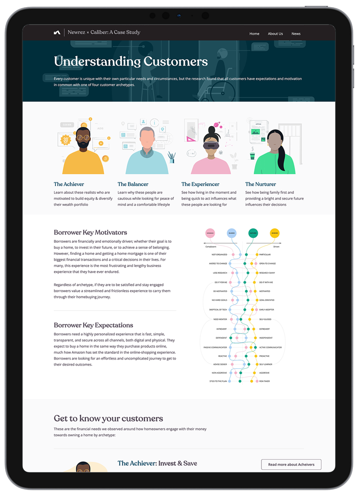

Work
A selection of work focused on understanding behavior, reframing problems, and changing how teams make decisions.
In-Venue Commerce Research (MLB)
Fans expressed dissatisfaction with food and beverage options, citing price, quality, and availability, while actual purchasing behavior remained inconsistent and difficult to improve.
Teams believed that improving concession stand speed and throughput would directly increase sales.
- 1.Fans weren't buying more because they feared missing key moments in the game.
- 2.Spending was suppressed not by line speed, but by cognitive load, social flow, and attention limits.
- Fans maintain two mindsets simultaneously: Researching (logistical) and Ritualizing (emotional)
- Fans alternate between two modes: Focused (goal-oriented) and Exploring (open to influence)
- Purchasing often conflicts with fear of missing key moments
- Cognitive load and fragmented information reduce decision confidence
- Group dynamics, especially for parents, amplify friction and hesitation
- "Faster service" does not resolve FOMO or uncertainty

Teams recognized they lacked visibility into the behavioral drivers of concession decisions and began shifting toward structured experimentation and cross-league learning rather than relying on assumptions or vendor solutions.
Teams became more receptive to behavior-led analysis instead of operational assumptions about throughput and efficiency.
Home-Buying Experience Vision (Newrez)
Customers moving through the mortgage process experienced long, opaque, and inconsistent application flows, resulting in drop-off and refinancing loss to competitors.
The organization attributed delays primarily to broker inefficiency and missed rate lock windows.
- 1.Customers were losing their guaranteed interest rates because of delays, miscommunication, and preventable errors on both sides of the experience.
- 2.Loan processing staff were completely abandoning the provided tools in favor of their own workarounds.
- Loan completion behavior was consistent across specific behavioral patterns, not demographics.
- Internal personas did not reflect real behavioral segmentation.
- Tools intended to improve efficiency often introduced additional work.
- Each role in the process optimized locally, creating downstream rework.
- The system was fragmented across incompatible working styles.

A unified experience vision was developed for both customers and internal teams, reframing the mortgage process as a connected service rather than a sequence of disconnected tasks.
The organization shifted toward testing smaller, prototype-driven improvements rather than attempting fully defined end-to-end solutions upfront.
Diabetes Smart Assistant (Lifescan)
People with poorly controlled diabetes were not consistently following their treatment plans, despite having access to monitoring tools and clinical guidance.
The team assumed the core issue was numeracy: that patients did not understand their blood glucose data.
- 1.Pateints couldn't keep track of their doctor's advice for more than a few days.
- 2.Treatment plans didn't take the variables of a patient's life into account.
- Treatment adherence is driven more by daily context and constraints than understanding of numbers.
- Patients struggle most in moments between clinical visits, not during them.
- Behavioral and environmental factors outweigh informational clarity.
- Focus group feedback reflected interpretation, not lived behavior.
- Real-world routines contradicted stated understanding of the problem.

The team moved away from an education-first concept (a conversational avatar explaining data) toward a behavioral intervention model supported by AI and clinical oversight.
Patients gained clearer understanding of their treatment in the context of their daily behavior, not just their clinical data, and the experience became meaningfully more usable in real-world conditions.
Medical Device Testing & Optimization (Johnson & Johnson)
Children prescribed injectable biologics frequently failed to correctly administer doses, resulting in incomplete delivery ("wet leg" incidents).
The problem was initially attributed to injection speed, force, or patient anxiety during administration.
- Device ergonomics did not support small-hand grip stability
- Button mechanics were difficult to coordinate during injection
- Instructions were too complex to follow during active use
- Failure resulted from multiple interacting usability breakdowns, not a single mechanism issue
The device and instructions were redesigned to better support real-time use, including improved ergonomics and simplified step-by-step digital guidance. Failure rates decreased significantly and the program advanced through accelerated regulatory pathways.
Environmental Allergy Manager (Zyrtec)
Patients struggled to anticipate allergy symptom severity and were often unprepared for daily environmental conditions.
The team believed environmental and pollen data alone could improve prediction accuracy and patient preparedness.
- Patients relate more to others with similar experiences than abstract environmental data
- Understanding comes from lived comparison, not numerical forecasting
- Trust increases when information is grounded in human experience
- Preparedness is driven by expectation-setting, not raw environmental signals
The experience shifted toward combining environmental data with crowd-sourced symptom reporting to improve interpretability and trust.
If you're working on something challenging, let's talk!
I work with teams tackling complex problems where behavior, context, and systems shape outcomes.
Currently available for consulting or full-time roles in the New York Metro Area or remotely.